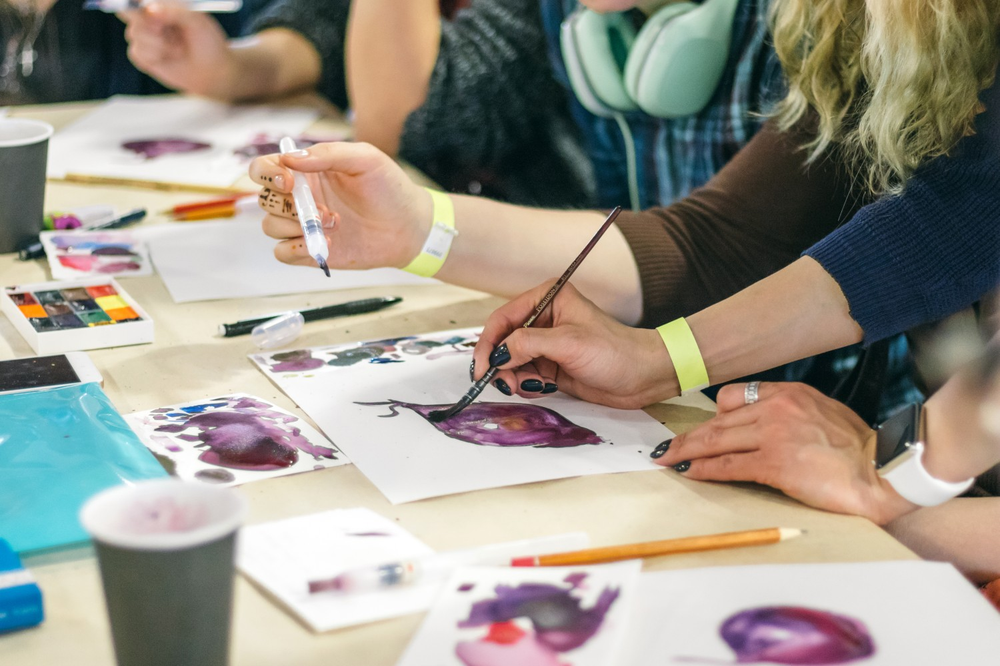

Arteterapia como instrumento psicoterapêutico
O homem expressa suas emoções por meio da arte desde o início da humanidade, seja ela plástica, visual, sonora ou dramática. No século XX, Freud se interessou pela arte e postulou que o inconsciente se manifesta através de imagens, podendo
o artista simbolizar e retratar conteúdos psíquicos na produção artística, sem censuras, como por meio das palavras, sendo esta uma forma de catarse. O psiquiatra Carl Jung foi o primeiro a utilizar a expressão artística no consultório,
pois, considerava que a simbolização do consciente coletivo e individual ocorre na arte. Desta forma, Jung é considerado um dos precursores da arteterapia por entender que a criatividade artística é uma função psíquica natural e estruturante
da pessoa.
A Arteterapia é uma área da psicoterapia que utiliza recursos artísticos como terapêutica, com o objetivo de trabalhar a expressão de sentimentos, emoções e pensamentos. Ela pode ser utilizada como modalidade terapêutica
em Psicologia da Saúde e Hospitalar, que vem sendo estudada e aplicada desde os anos 1920, em duas grandes linhas de atuação: a arte como terapia e arte como psicoterapia. Nesta primeira, o foco se dá no processo artístico e em suas
capacidades curativas, enquanto na segunda vertente, os recursos artísticos e suas técnicas são utilizados no decorrer do processo psicoterapêutico.
A arte se mostra um importante instrumento para a expressão da subjetividade
humana, que permite ao psicólogo e cliente acessar conteúdos emocionais, analisá-los e ressignificá-los. Conteúdos como traumas, conflitos emocionais, relações interpessoais e outros, podem ser abordados por meio do uso da arte, sendo
esta, uma ferramenta que amplia as possibilidades de expressão. Portanto, a arte pode ser uma via de acesso ao mundo subjetivo do indivíduo, ampliando a consciência do mesmo, facilitando a expressão e elaboração de conflitos intrapsíquicos,
e por si só trazer benefícios terapêuticos.
Geralmente, ao dar início ao processo psicoterapêutico, o discurso se encontra, em grande parte, bloqueado devido às resistências, então a arte se torna um canal possível para facilitar
a comunicação, oferecendo a possibilidade de expressão e reflexão, e podendo também auxiliar o sujeito no confronto com a sua própria finitude. Os materiais escolhidos devem se adequar à produção do indivíduo e condizer com os objetivos
buscados, pois podem apresentar possibilidades de insight.
A arte pode ser considerada como uma via de canalização das fantasias e de impulsos destrutivos e construtivos, para que o sujeito possa elaborar e dar sentido aos
seus sentimentos e vivências. A arte funciona aplicada a psicoterapia de pacientes, podendo auxiliar na expressão de sentimentos e vivências desorganizadoras, e dar sentido aos pensamentos e emoções que são mobilizados.
A
arte é um instrumento catártico, em que o paciente pode relaxar e expressar suas emoções, e a expressão de sentimentos negativos não gera vergonha ou medo, sendo esta uma oportunidade de libertar os sentimentos dolorosos. E por meio
das projeções dos conteúdos subjetivos e inconscientes, é possível compreender as questões intrapsíquicas que envolvem o sofrimento e o adoecer psiquíco, ligando-os à história de vida de cada um. Ao manifestar suas impressões sobre
a obra, o sujeito manifesta sobre si mesmo, a arte, por ser projetiva revela aquilo que o sujeito muitas vezes não consegue dizer. Quando o conteúdo psíquico é externalizado por meio de uma imagem visual e esta é compartilhada com
o outro, é mais fácil para o indivíduo tomar uma certa distância em suas questões e refletir sobre elas.
GABRIELA BORGES CARVALHO; SEBASTIÃO BENÍCIO DA COSTA NETOII; CINTIA BRAGHETO FERREIRA. Arte como instrumento
psicoterapêutico no tratamento hospitalar de pessoas com doenças onco-hematológicas. Rev. SBPH vol.23 no.1 São Paulo jan./jun. 2020
Sobre a Saber
A Saber Educacional iniciou suas atividades em abril de 2020, com o objetivo de oferecer atendimento clínico especializado a crianças, adolescentes e adultos
Nossas Redes Sociais